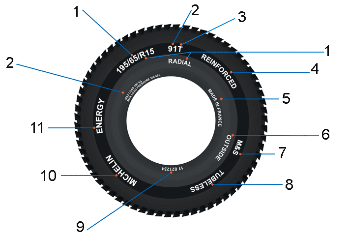

Что означает маркировка шин?
Все возможные обозначения
На боковине любой покрышки можно увидеть множество разных символов – цифры, буквы, значки и т.д. Зная, как расшифровать эти обозначения, вы получите о шине самую исчерпывающую информацию.

1. Так указывается размер шины. Первая цифра в индексе обозначает ширину покрышки в миллиметрах, вторая – высоту профиля в процентах от ширины. Далее следуют буква, сообщающая о конструкции шины, и цифра, говорящая о посадочном диаметре покрышки в дюймах.
Например, обозначение 195/65 R15 расшифровывается так: ширина шины 195 мм, высота профиля – 126,75 мм (65% от ширины), R – покрышка радиальной конструкции (есть еще диагональные, но они сегодня практически не встречаются), посадочный диаметр для установки на диск - 15 дюймов.
Иногда в подобном индексе отсутствует указание на высоту профиля (например, 195 R15). Это значит, что его величина превышает 80%. Такие шины называются полнопрофильными. Зачастую ими комплектуются легкие коммерческие грузовички и фургоны.
2. Индекс или коэффициент нагрузки. Обозначается цифрами от 0 до 130, но наиболее распространенный диапазон – от 71 до 110. Причем каждому сочетанию соответствует своя допустимая нагрузка на шину в килограммах (см. таблицу).
Иногда производители указывают непосредственно на шине ее грузоподъемность (в частности, это обязательно для шин, допущенных к продаже в США). В этом случае на боковине можно увидеть надпись Max Load и значение нагрузки в килограммах и английских фунтах. Например, Max Load 515kg (1135lbs).
Индекс Нагрузка, кг
71 345
72 355
73 365
74 375
75 387
76 400
77 412
78 425
79 437
80 450
81 462
82 475
83 487
84 500
85 515
86 530
87 545
88 560
89 580
90 600
91 615
92 630
93 650
94 670
95 690
96 710
97 730
98 750
99 775
100 800
101 825
102 850
103 875
104 900
105 925
106& nbsp; 950
107 975
108 1000
109 1030
110 1060
3. Индекс скорости. Обозначается латинскими буквами (расшифровку см. в таблице) и говорит о том, на движение с какой максимальной скоростью рассчитана покрышка.
Индекс скорости / Скорость, км/ч / Скорость, миль/ч
B / 50 / 31
C / 60 / 37
D / 65 / 40
E / 70 / 43
F / 80 / 50
G / 90 / 56
J / 100 / 62
K / 110 / 68
L / 120 / 75
M / 130 / 81
N / 140 / 87
P / 150 / 93
Q / 160 / 100
R / 170 / 106
S / 180 / 113
T / 190 / 118
H / 210 / 130
V / 240 / 150
W / 270 / 168
Y / 300 / 186
ZR / 240+ / 149+
4. Такая надпись сообщает об усиленном каркасе шины, что актуально для покрышек коммерческой техники. Поэтому зачастую вместо слова Reinforced на боковине производитель просто добавляет букву С (что значит commercial) в обозначение параметров шины. Например, 195/65 R15 C.
5. Страна-производитель шины. Например, made in France – сделано во Франции, made in Germany – сделано в Германии.
6. У шин с ассиметричным рисунком протектора на боковину наносится обозначение внешней относительно кузова стороны. Ее маркируют словом Outwards, Out, Side facing outwards и т.д.
7. Указание на приспособленность шины к различным условиям эксплуатации:
M+S - Mud + Snow: грязь плюс снег
As - All Season : всесезонная
Aw - Any Weather: Любая погода
Aquatred, Aquacontact, или пиктограмма в виде зонтика - специальные дождевые шины.
Пиктограмма в виде снежинки – покрышки для суровых зимних условий.
Если же на боковине нет подобных обозначений, значит, шину можно использовать только летом, в теплую погоду.
8. Исполнение шины – камерное или бескамерное. Обозначается Tube Type (ТТ) или Tubeless (ТL) соответственно.
9. Знак сертификации. На шинах, одобренных в Европе по Правилу №30 ЕЭК ООН, он представляет собой вписанную в круг букву E и цифровой индекс, соответствующий стране, выдавшей одобрение. Например, за Россией в этом списке закреплен №22. Далее следует длинный набор цифр – номер сертификата соответствия стандартам.
Покрышки, соответствующие американским нормам, дополнительно несут на себе обозначение DOT, в котором зашифрованы данные не только о номере протокола испытаний, но и о производителе шины. Например, DOT МКR4 AJOR
10. Название или логотип компании-производителя шины. Например, Michelin, Good Year, Yokohama.
11. Модель шины. Например, Energy, SP Sport 9000, Turanza ER300.
Кроме того, на многих шинах можно встретить дополнительные обозначения:
Дата выпуска шины. Это четырехзначная цифра вроде 1109, что означает 11-я неделя производства 2009 года.
Regrooveable – шина с возможностью дополнительного углубления протектора.
TWI (Tread Wear Indication - индикаторная дорожка износа) – такой знак на боковине шины указывает на размещение индикатора износа на протекторе (напомним, что в России его глубина должна быть не менее 1,6 мм). Обычно этот символ наносят по окружности в шести местах. Выполнен он может быть по-разному. У многих производителей индикатор представляет собой простой выступ в канавке протектора. Когда они сравниваются по высоте – покрышка должна отправиться на переработку. В более продвинутых моделях индикатор выглядит как набор цифр, обозначающих остаточную высоту протектора. По мере его износа, числа постепенно стираются.
Maximum Pressure - максимальное давление в холодной шине. Обычно указывается в фунтах на квадратный дюйм (1PSI=0,0069 МПа) или единицах бар, практически равных атмосфере.
Стрелка, иногда с надписью Rotation, - показывает требуемое направление вращения шины с направленным рисунком протектора.
Tread Wear Index – Индекс износостойкости. Условная величина, показывающая насколько долговечна шина. К примеру, покрышка с обозначением 200 теоретически должна обладать в два раза большим ресурсом, чем аналог с индексом 100. Но на практике это достижимо лишь в идеальных условиях полигона или лаборатории, где нет влияния таких факторов, как стиль езды водителя, качество дорог и т.д.
Traction Index – индекс сцепных свойств шины (A – Превосходные, B – Средние, C –Удовлетворительные). Определяется в процессе испытаний на специальном полигоне по особой методике. Она главным образом оценивает качество торможения, а не устойчивость в поворотах.
Temperature Index – температурный индекс (A – превосходный, B – Средний, C –Удовлетворительный). Этот показатель определяет стойкость шины к воздействию высоких температур. Чем выше оценка, тем меньше покрышка меняет свои свойства при нагреве. Испытания проводятся в лаборатории на специальном стенде.
Цветные точки (белые, красные, желтые) на боковине указывают на самое легкое место шины относительно центра ее вращения. Именно здесь следует устанавливать вентиль. Если же на покрышке присутствуют одновременно желтая (белая) и красная метки, то последняя располагается в самом тяжелом месте шины.
Также шина порой содержит обозначения, указывающие на ее особые свойства. В частности, покрышки RunFlat (RSC - RunFlat System Component) позволяют некоторое время передвигаться на проколотом колесе. Кроме того, есть модели, обеспечивающие защиту обода диска. Как правило, такие шины используются автопроизводителями автомобилей премиум-сегмента.